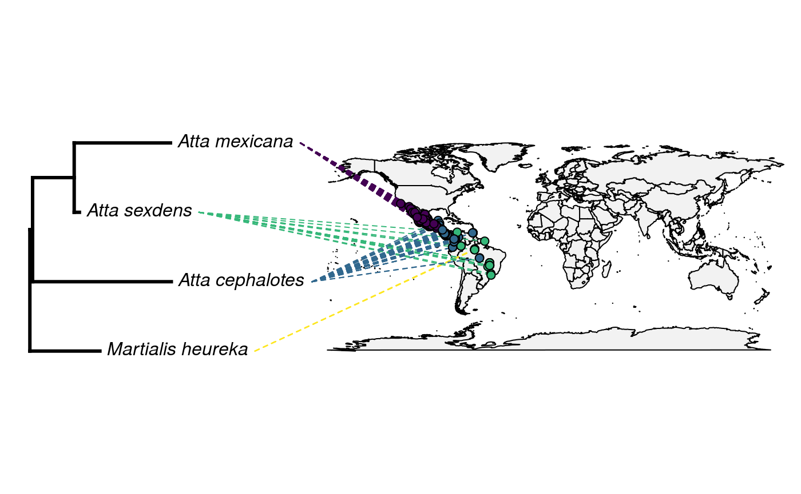

09_GBIF_and_Location.RmdThis week, we will be starting with geospatial data and mapping. Today, we will begin with locality data in GBIF. GBIF is a website for aggregating location data from other sources.
We will work with two packages today. One is RGBIF, an interface to GBIF data maintained by the ROpenSci group.
## Installing package into '/home/rstudio-user/R/x86_64-pc-linux-gnu-library/3.6'
## (as 'lib' is unspecified)## Installing package into '/home/rstudio-user/R/x86_64-pc-linux-gnu-library/3.6'
## (as 'lib' is unspecified)Later in this lesson, we will also use the rotl package we’ve seen last week.
First, we’re going to try an example for one ant. We will query locality data and map it in a few ways. Then, you will figure out how to make the process of mapping data iterable over a set of taxa.
## Registered S3 method overwritten by 'crul':
## method from
## as.character.form_file httr## # A tibble: 1 x 3
## key canonicalName rank
## * <int> <chr> <chr>
## 1 5035745 Atta mexicana SPECIESNext, we’re going to use occ_search to search the GBIF database for where these things are occurring.
Next, we will filter the resultant dataset to name and lat and longitude data.
## ── Attaching packages ─────────────────────────────────────────────────── tidyverse 1.2.1 ──## ✔ ggplot2 3.2.1 ✔ purrr 0.3.2
## ✔ tibble 2.1.3 ✔ dplyr 0.8.3
## ✔ tidyr 0.8.3 ✔ stringr 1.4.0
## ✔ readr 1.3.1 ✔ forcats 0.4.0## ── Conflicts ────────────────────────────────────────────────────── tidyverse_conflicts() ──
## ✖ dplyr::filter() masks stats::filter()
## ✖ dplyr::lag() masks stats::lag()no_na <- occurences$data %>%
select(scientificName, decimalLatitude, decimalLongitude) %>%
drop_na()And finally, we will plot the data using leaflet
k <- leaflet::leaflet(no_na) %>%
addTiles() %>%
addMarkers(~decimalLongitude, ~decimalLatitude, popup = no_na$scientificName)This looks much like plotting with ggplot and tidyverse. That’s because leaflet is based on the same principles. We establish a canvas and the data in the first line, then we add tiles (the actual map we will use), and then we add our points. When we think about it, this is quite similar to establishing a ggplot canvas, the axes, and the points to plot.
One point is easy. How often do we only want one point, though? Probably, we will want to plot several species. First, with a partner, work out how to get GBIF ids for a set of taxa.
ants <- c("Martialis", "Atta", "Ectatomma", "Tatuidris", "Aneuretus", "Xymmer", "Aenictus")
#Get GBIF ids for our vector of species.
ids <-c()
for (ant in ants){
print(ant)
raw <- name_suggest(ant)
print(raw)
ids[ant] <- c(raw$key)
}## [1] "Martialis"
## # A tibble: 72 x 3
## key canonicalName rank
## * <int> <chr> <chr>
## 1 7744356 Martialis GENUS
## 2 9599316 ? martialis UNRANKED
## 3 7437085 Martialis heureka SPECIES
## 4 6349179 Hendersonia martialis SPECIES
## 5 8655352 Electrapis martialis SPECIES
## 6 7395874 Cantharis martialis SPECIES
## 7 5510493 Globulina martialis SPECIES
## 8 5025232 Agathis martialis SPECIES
## 9 8005896 Scopula martialis SPECIES
## 10 5484304 Nectria martialis SPECIES
## # … with 62 more rows## Warning in ids[ant] <- c(raw$key): number of items to replace is not a
## multiple of replacement length## [1] "Atta"
## # A tibble: 100 x 3
## key canonicalName rank
## * <int> <chr> <chr>
## 1 1323108 Atta GENUS
## 2 6006602 Atta GENUS
## 3 5035739 Atta robusta SPECIES
## 4 5035737 Atta goiana SPECIES
## 5 8368352 Atta penetrans SPECIES
## 6 5035740 Atta silvae SPECIES
## 7 5035749 Atta domicola SPECIES
## 8 8772445 Atta turrifex SPECIES
## 9 7359300 Atta didita SPECIES
## 10 5035736 Atta columbica SPECIES
## # … with 90 more rows## Warning in ids[ant] <- c(raw$key): number of items to replace is not a
## multiple of replacement length## [1] "Ectatomma"
## # A tibble: 90 x 3
## key canonicalName rank
## * <int> <chr> <chr>
## 1 1314135 Ectatomma GENUS
## 2 7570313 Ectatomma parasiticum SPECIES
## 3 9175376 Ectatomma rimulosum SPECIES
## 4 4673127 Ectatomma socrus SPECIES
## 5 1314147 Ectatomma edentatum SPECIES
## 6 4673125 Ectatomma rothneyi SPECIES
## 7 1314136 Ectatomma gibbum SPECIES
## 8 1314144 Ectatomma planidens SPECIES
## 9 1314149 Ectatomma opaciventre SPECIES
## 10 4673119 Ectatomma punctata SPECIES
## # … with 80 more rows## Warning in ids[ant] <- c(raw$key): number of items to replace is not a
## multiple of replacement length## [1] "Tatuidris"
## # A tibble: 3 x 3
## key canonicalName rank
## * <int> <chr> <chr>
## 1 1319364 Tatuidris GENUS
## 2 1319365 Tatuidris tatusia SPECIES
## 3 9541003 Tatuidris kapasi SPECIES## Warning in ids[ant] <- c(raw$key): number of items to replace is not a
## multiple of replacement length## [1] "Aneuretus"
## # A tibble: 4 x 3
## key canonicalName rank
## * <int> <chr> <chr>
## 1 1320037 Aneuretus GENUS
## 2 1320038 Aneuretus simoni SPECIES
## 3 1737071 Decodes aneuretus SPECIES
## 4 1590997 Bibio aneuretus SPECIES## Warning in ids[ant] <- c(raw$key): number of items to replace is not a
## multiple of replacement length## [1] "Xymmer"
## # A tibble: 3 x 3
## key canonicalName rank
## * <int> <chr> <chr>
## 1 4674293 Xymmer GENUS
## 2 10000176 Xymmer ambvky SPECIES
## 3 8741954 Xymmer phungi SPECIES## Warning in ids[ant] <- c(raw$key): number of items to replace is not a
## multiple of replacement length## [1] "Aenictus"
## # A tibble: 100 x 3
## key canonicalName rank
## * <int> <chr> <chr>
## 1 1317499 Aenictus GENUS
## 2 1317562 Aenictus javanus SPECIES
## 3 1317538 Aenictus abeillei SPECIES
## 4 1317644 Aenictus lifuiae SPECIES
## 5 1317527 Aenictus alluaudi SPECIES
## 6 1317564 Aenictus trigonus SPECIES
## 7 1317605 Aenictus icarus SPECIES
## 8 1317575 Aenictus dentatus SPECIES
## 9 9136241 Aenictus tuberculatus SPECIES
## 10 9265079 Aenictus nishimurai SPECIES
## # … with 90 more rows## Warning in ids[ant] <- c(raw$key): number of items to replace is not a
## multiple of replacement lengthNow, we will get the actual specimen occurrences for these ants. Practice using an apply function to do this. Inspect the object you’ve queried when you’ve completed your loop. Have we dealt with an object like this before?
This is a vector or dataframes. Each individual query made it’s own dataframe. For simplicity, lets combine them into one dataframe object.
#Combine the resultant dataframes into one large dataframe
mega_df <- bind_rows(df, .id = "column_label")Since we will be plotting these with a map, we need complete data in both columns - lat and long. Let’s drop any columns without data in both.
#Drop rows with NA values in the lat and long
no_na <- mega_df %>%
select(scientificName, decimalLatitude, decimalLongitude) %>%
drop_na()Now let’s take a peek at our results!
# Plot the dataframe of observations
k <- leaflet::leaflet(no_na) %>%
addTiles() %>%
addMarkers(~decimalLongitude, ~decimalLatitude, popup = no_na$scientificName)Below are six code snippets to do different types of map-based plotting. With a partner, discuss what you think would be interesting or important to view in these data. Choose a block of code to modify to accomplish your visualization. We will reconvene in about 30 minutes and do a Round Robin showing everyone’s maps. Have Fun!
pal <- colorBin(
palette = "Blues",
no_na$scientificName,
pretty = TRUE)
levs <- factor(no_na$scientificName)
factpal <- colorFactor(topo.colors(5), levs)
no_na %>%
group_by(scientificName) %>%
leaflet() %>%
addTiles() %>%
addCircleMarkers(
~decimalLongitude,
~decimalLatitude,
color = ~factpal(scientificName),
stroke = FALSE, fillOpacity = 0.5
) pal <- colorBin(
palette = "Blues",
no_na$scientificName,
pretty = TRUE)
levs <- factor(no_na$scientificName)
factpal <- colorFactor(topo.colors(5), levs)
no_na %>%
group_by(scientificName) %>%
leaflet() %>%
addTiles() %>%
addCircleMarkers(
~decimalLongitude,
~decimalLatitude,
color = ~factpal(scientificName),
stroke = FALSE, fillOpacity = 0.5
) %>%
setView( lng = -100,
lat = 20,
zoom = 11 ) %>%
setMaxBounds( lng1 = -100,
lat1 = 19.432241,
lng2 = -98,
lat2 = 20 )We will need one package we haven’t used yet, Liam Revell’s Phytools.
## Loading required package: ape## Loading required package: maps##
## Attaching package: 'maps'## The following object is masked from 'package:purrr':
##
## mapPlotting a phylogeny to a map is a fairly simple task, but has a lot of data preparation work involved. The basic steps look like this:
You may have noticed that the GBIF package includes citation information in the scientificName column. We will need to remove that. To do this, let’s try the strsplit function. This function splits a character string on a defined character and returns a vector of the elements in that character string.
For example:
## [[1]]
## [1] "This" "is" "my" "string"Try indexing this object. What do you need to do to access data? Now, with a partner, make this iterable across every row in the scientificName column. Then, unite the split objects into one new column called genusSpecies.
split_names <- no_na %>%
mutate(genus = map_chr(scientificName, function(s) strsplit(s, " ")[[1]][1]))%>% mutate(species = map_chr(scientificName, function(s) strsplit(s, " ")[[1]][2])) %>%
unite(col = genusSpecies, genus, species)If you look at the data, there are some obviously mistaken values in there. For example, BOLD is not an ant species. Let’s drop that.
# Use ROTL to resolve names
no_bold <- split_names[ grep("BOLD", split_names$genusSpecies, invert = TRUE) , ]We also ended up with far more ant taxa than I thought. What a nice problem to have! But let’s filter down to, say, five of them:
a_couple_ants <- c("Martialis_heureka", "Atta_mexicana", "Atta_cephalotes", "Atta_sexdens", "Atta_Fabricius")
subset_data <- no_bold %>%
filter(genusSpecies %in% a_couple_ants)Now, let’s use ROTL to make sure we don’t have spelling errors.
reconciled_names <- rotl::tnrs_match_names(unique(subset_data$genusSpecies))
good_names <- reconciled_names %>%
drop_na()Now, we will query our tree from OpenTree.
##
Progress [----------------------------------] 0/26 ( 0%) ?s
Progress [================================] 26/26 (100%) 0s
## Warning in collapse_singles(tr, show_progress): Dropping singleton
## nodes with labels: mrcaott1682ott35311, mrcaott1682ott17752,
## mrcaott1682ott7438, mrcaott1682ott4706, mrcaott4706ott5525,
## mrcaott5525ott48019, mrcaott5525ott8038, mrcaott8038ott8685,
## mrcaott8685ott36581, mrcaott8685ott56535, mrcaott8685ott72729,
## mrcaott8685ott86888, mrcaott86888ott129302, Attini, mrcaott114767ott114779,
## mrcaott114779ott339738, mrcaott114779ott116619, mrcaott116619ott148996,
## mrcaott148996ott1071522, mrcaott148996ott150184, mrcaott148996ott339763,
## mrcaott148996ott409299, mrcaott409299ott709966, mrcaott409301ott997492,
## Martialinae, MartialisNow, we must combine our GBIF data and our taxon names into a matrix, a two-dimensional data structure with fewer neat data parsing features than a dataframe or tibble. These structures are often preferred when speed is an issue. Matrices can only be one type, which means we must add the row names after generating the object.
only_lat_long <- subset_data %>%
select(decimalLatitude, decimalLongitude) %>%
as.matrix()
rownames(only_lat_long) <- subset_data$genusSpeciesAnd the big reveal! Let’s overlay our OpenTree with our map:
## Loading required package: viridisLitecols<-setNames(sample(viridis(n=Ntip(tree))),
tree$tip.label)
obj<-phylo.to.map(tree,only_lat_long, plot=FALSE, direction="rightwards")## objective: 6## objective: 6Oh no! What has gone wrong?
This tree has several quirks. Have a look at the object and see if you can spot them.
#Answer here
- No branch lengths
- Not fully bifurcating
First, let’s resolve the polytomy issue. We will do this using Ape’s multi2di function, which arbitrarily resolves polytomies. In real life, you would probably want to think about this a little more.:
We’ll also need to add some branch lengths. In our case, we will draw them from an exponential distribution. The exponential is often assumed to be a reasonable approximation for banch lengths - you’ll hear more about this if you take my systematics lab ;)
In our case, we will use rexp to make the draws, and we will map them to a new attribute edge.length that is a standard attribute of the tree object. In reality, you would likely not want to do this for a publication quality analysis, and would want to estimate branch lengths from data. But being able to rescale branch lengths is a good skill for sensitivity and other similar analyses.
## [1] 0.04547217 0.69441869 0.08736920 1.60691154 2.31540105 1.16900540Now let’s try that map again.
## objective: 6
## objective: 6## objective: 4Finally, we will actually plot to space.
